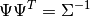
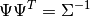
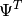
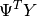

Linear Regression¶
Linear models with independently and identically distributed errors, and for errors with heteroscedasticity or autocorrelation. This module allows estimation by ordinary least squares (OLS), weighted least squares (WLS), generalized least squares (GLS), and feasible generalized least squares with autocorrelated AR(p) errors.
See Module Reference for commands and arguments.
Examples¶
# Load modules and data
In [1]: import numpy as np
In [2]: import statsmodels.api as sm
In [3]: spector_data = sm.datasets.spector.load()
In [4]: spector_data.exog = sm.add_constant(spector_data.exog, prepend=False)
# Fit and summarize OLS model
In [5]: mod = sm.OLS(spector_data.endog, spector_data.exog)
In [6]: res = mod.fit()
In [7]: print(res.summary())
OLS Regression Results
==============================================================================
Dep. Variable: y R-squared: 0.416
Model: OLS Adj. R-squared: 0.353
Method: Least Squares F-statistic: 6.646
Date: Tue, 28 Feb 2017 Prob (F-statistic): 0.00157
Time: 21:38:07 Log-Likelihood: -12.978
No. Observations: 32 AIC: 33.96
Df Residuals: 28 BIC: 39.82
Df Model: 3
Covariance Type: nonrobust
==============================================================================
coef std err t P>|t| [0.025 0.975]
------------------------------------------------------------------------------
x1 0.4639 0.162 2.864 0.008 0.132 0.796
x2 0.0105 0.019 0.539 0.594 -0.029 0.050
x3 0.3786 0.139 2.720 0.011 0.093 0.664
const -1.4980 0.524 -2.859 0.008 -2.571 -0.425
==============================================================================
Omnibus: 0.176 Durbin-Watson: 2.346
Prob(Omnibus): 0.916 Jarque-Bera (JB): 0.167
Skew: 0.141 Prob(JB): 0.920
Kurtosis: 2.786 Cond. No. 176.
==============================================================================
Warnings:
[1] Standard Errors assume that the covariance matrix of the errors is correctly specified.
Detailed examples can be found here:
Technical Documentation¶
The statistical model is assumed to be
, where
Depending on the properties of  , we have currently four classes available:
, we have currently four classes available:
- GLS : generalized least squares for arbitrary covariance
- OLS : ordinary least squares for i.i.d. errors
- WLS : weighted least squares for heteroskedastic errors
- GLSAR : feasible generalized least squares with autocorrelated AR(p) errors
All regression models define the same methods and follow the same structure, and can be used in a similar fashion. Some of them contain additional model specific methods and attributes.
GLS is the superclass of the other regression classes except for RecursiveLS.
References¶
General reference for regression models:
- D.C. Montgomery and E.A. Peck. “Introduction to Linear Regression Analysis.” 2nd. Ed., Wiley, 1992.
Econometrics references for regression models:
- R.Davidson and J.G. MacKinnon. “Econometric Theory and Methods,” Oxford, 2004.
- W.Green. “Econometric Analysis,” 5th ed., Pearson, 2003.
Attributes¶
The following is more verbose description of the attributes which is mostly common to all regression classes
- pinv_wexog : array
- The p x n Moore-Penrose pseudoinverse of the whitened design matrix.
It is approximately equal to
 , where
is defined such that .
, where
is defined such that . - cholsimgainv : array
- The n x n upper triangular matrix  that satisfies .
- df_model : float
- The model degrees of freedom. This is equal to p - 1, where p is the number of regressors. Note that the intercept is not counted as using a degree of freedom here.
- df_resid : float
- The residual degrees of freedom. This is equal n - p where n is the number of observations and p is the number of parameters. Note that the intercept is counted as using a degree of freedom here.
- llf : float
- The value of the likelihood function of the fitted model.
- nobs : float
- The number of observations n
- normalized_cov_params : array
- A p x p array equal to
 .
. - sigma : array
- The n x n covariance matrix of the error terms: .
- wexog : array
- The whitened design matrix
 .
. - wendog : array
- The whitened response variable .
Module Reference¶
Model Classes¶
OLS(endog[, exog, missing, hasconst]) |
A simple ordinary least squares model. |
GLS(endog, exog[, sigma, missing, hasconst]) |
Generalized least squares model with a general covariance structure. |
WLS(endog, exog[, weights, missing, hasconst]) |
A regression model with diagonal but non-identity covariance structure. |
GLSAR(endog[, exog, rho, missing]) |
A regression model with an AR(p) covariance structure. |
yule_walker(X[, order, method, df, inv, demean]) |
Estimate AR(p) parameters from a sequence X using Yule-Walker equation. |
QuantReg(endog, exog, **kwargs) |
Quantile Regression |
RecursiveLS(endog, exog, **kwargs) |
Recursive least squares |
Results Classes¶
Fitting a linear regression model returns a results class. OLS has a specific results class with some additional methods compared to the results class of the other linear models.
RegressionResults(model, params[, ...]) |
This class summarizes the fit of a linear regression model. |
OLSResults(model, params[, ...]) |
Results class for for an OLS model. |
QuantRegResults(model, params[, ...]) |
Results instance for the QuantReg model |
RecursiveLSResults(model, params, filter_results) |
Class to hold results from fitting a recursive least squares model. |